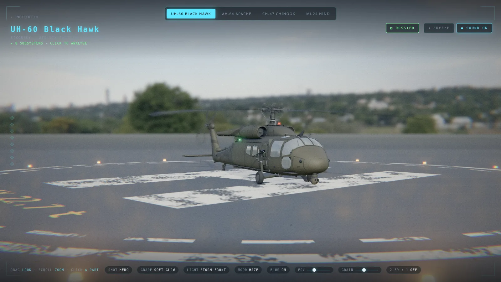
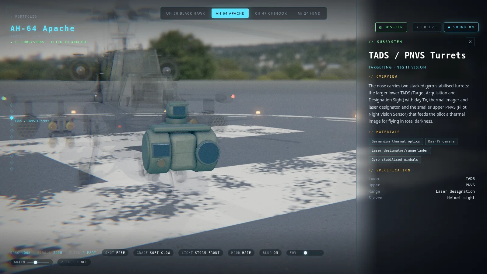
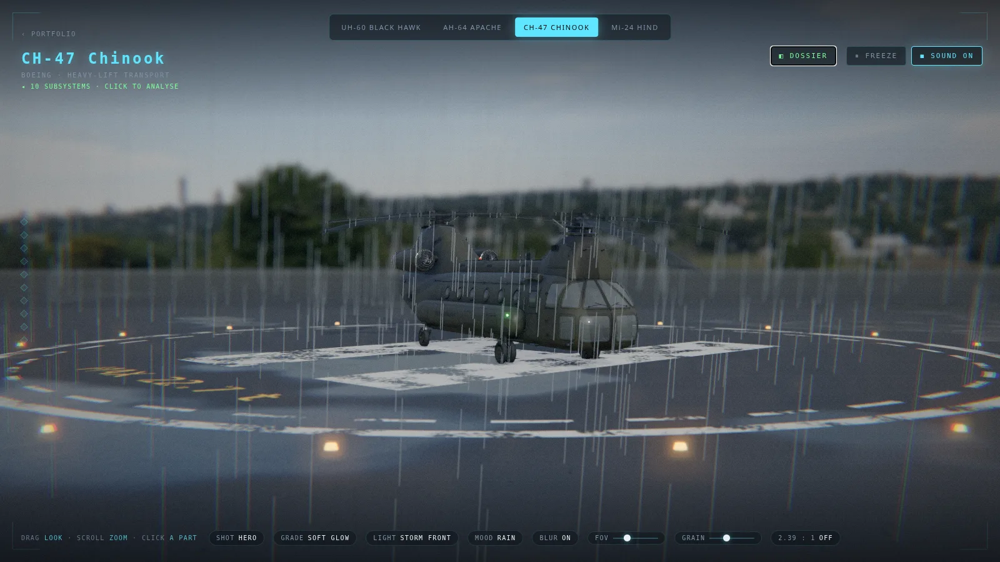
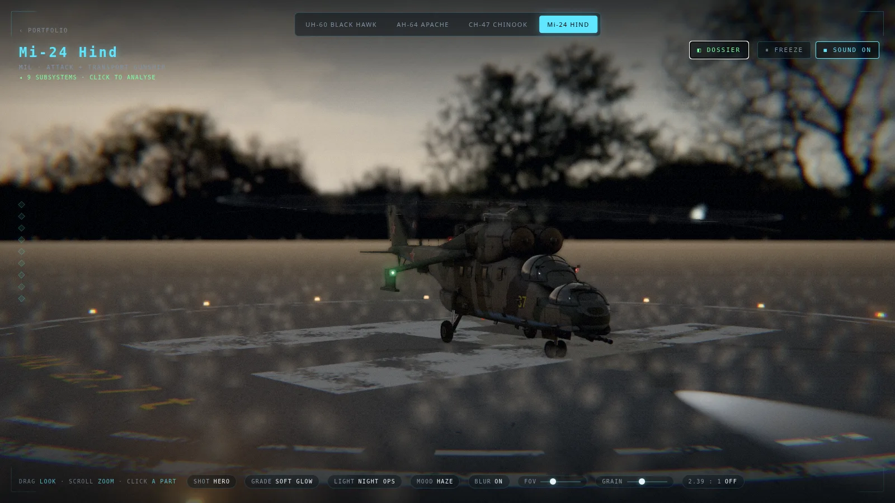

Helicopter Archive
A web page where you can walk around four real military helicopters in 3D — the UH-60 Black Hawk, AH-64 Apache, CH-47 Chinook and Mi-24 Hind. It runs right inside your browser, with no app to install. You can click any part of a helicopter to learn what it does, and change the weather, the light and the camera like a film director.

The ideaWhat is it, in simple words?
Think of it as a small online museum hangar. Each helicopter has its own tab at the top. Pick one, and it appears on a helipad with a real sky behind it. You can spin around it with your mouse, zoom in close, and click a part — like the engine, the rotor or the cockpit. The rest of the helicopter turns see-through, the camera flies to that part, and a side panel explains what it is for, what it is made of and its key numbers.
I wanted it to feel like a scene from a movie, not like a video game from the 2000s. So everything — the models, the lighting, the colours and even the sound — was made with that "Hollywood" look in mind.
See itWhat you can do



Film-style camera moves
Choose a "Shot": a low hero angle, a slow orbit, a fly-by along the side, or a crane shot from above. The camera even has a slight hand-held shake, like a real camera operator.
Colour styles like a movie
Switch between colour "grades" such as Soft glow, Nordic slate, Bleach bypass and Teal & orange. Add film grain, background blur, or black cinema bars at the top and bottom.
Living helicopters
Rotors spin up and blur into a disc, the red warning light on top flashes, and the wind from the rotors kicks up dust from the ground.
Sound made by code
The "whop-whop" of the blades, the engine whine, wind and rain are all created live in the browser. Closer to the helicopter means louder sound.
Under the hoodLanguages and tools I used
Each tool did one clear job. Here is what each one is, and what I used it for.
LANGUAGE JavaScript
The main programming language of every website.
Used for: the whole viewer — loading the helicopters, moving the camera, handling clicks, tabs, buttons and the info panel.
LIBRARY Three.js
A free toolkit that lets JavaScript draw 3D scenes on a web page, using your computer's graphics card.
Used for: showing the 3D models, lights, shadows, sky and ground.
LANGUAGE GLSL
A small language for programs that run on the graphics card, deciding the colour of every pixel very fast.
Used for: the film look — colour grading, film grain, lens flare, rotor blur, the searchlight beam and wet puddles on the ground.
LANGUAGE Python
A popular, easy-to-read programming language.
Used for: I wrote one Python script per helicopter. The script tells Blender exactly how to build every part — body, cockpit, engines, wheels and blades.
3D APP Blender
Free, professional 3D software used for films and games.
Used for: running my Python scripts to create the models, and "baking" the paint, dirt and panel lines into images.
WEB HTML & CSS
HTML builds the page structure; CSS makes it look good.
Used for: the tabs, side panel, buttons, loading screen and the control bar at the bottom.
BROWSER Web Audio API
The sound system built into every modern browser.
Used for: making the rotor, engine, wind, rain and thunder sounds live in code — no audio files needed.
FORMAT GLB · Draco · WebP
GLB is a single-file format for 3D models. Draco shrinks the shape data; WebP shrinks the images.
Used for: packing each detailed helicopter into one small 3–4 MB file that loads quickly.
Step by stepHow it works
From real photos to a moving helicopter in your browser — the whole journey in eight steps.
Study the real helicopters
I collected four real photos of each helicopter from different angles, plus their official sizes (length, height, rotor width). Every model is built to its true size in metres.
Build the shape with code
Instead of drawing by hand, my Python scripts build each helicopter inside Blender. The body is made like slicing a loaf of bread: I describe the shape of many thin slices from nose to tail, and Blender joins them into one smooth body. Wings, wheels and blades are added the same way, and the left side is mirrored to make the right side.
Paint it like a real aircraft
A paint recipe adds the army colour or camouflage, thin lines between metal panels, rows of rivets, dirt streaks running down the sides, and chipped paint on the edges — the small signs of wear that make it look real.
"Bake" the paint into pictures
Working out all that paint live would be too slow for a website. So Blender uses the graphics card to save it into three images: one for colour, one for shininess, and one for tiny bumps. The browser then just reads the pictures.
Pack it into one small file
Each helicopter is saved as a single GLB file, with the shape and pictures compressed. Every part is labelled (engine, cockpit, rotor…) so the website knows which piece you clicked.
Light it with a real sky
In the browser, Three.js loads the file. The light comes from a 360° photo of a real sky (called an HDRI), so reflections on the glass and metal match the sky you see. The code even finds where the sun is in that photo and points the shadows the right way.
Add the film camera effects
Like a movie camera lens, the picture goes through effects: soft shadows in corners and gaps, a blurred background with the helicopter in focus, a glow around bright lights, a colour style, film grain and a dark edge around the frame.
Make it interactive and add sound
When you click, the code sends an invisible line from your mouse into the scene and checks which part it hits first. That part stays solid, the rest fade, and the panel fills in with typing text. Meanwhile the sound engine creates the rotor noise to match the helicopter and how far away you are.
Real engineeringProblems I solved along the way
Baking went from about an hour to a few minutes
Blender was rebuilding the whole scene for each of about 150 painted parts, again and again. I merged all parts into one temporary copy just for baking — the same result, many times faster.
Half the screen went black
The night searchlight sat so close to the nose that it made "infinite" brightness on a few pixels, and the blur effects spread that error across the screen. I moved the light and added a safety filter that cleans any broken pixel before the effects run.
Colours that match the photos
The first versions looked blue-grey. I compared them side by side with the real photos and corrected the paint to the official army olive colours.
Runs on slower computers too
The page measures how fast your computer draws the first few seconds. If it is struggling, it quietly switches off the heaviest effects so the motion stays smooth.
Honest notesWhat it is — and what it isn't
- These are original models I built from reference photos. They look like a high-quality film preview, not a real photograph.
- Some very small parts are simplified, such as the rotor hubs and the Apache's radar dome.
- The sky photos and ground texture are free public assets from Poly Haven (CC0 licence). The reference photos were used only for comparison and are not part of the website.
See it for yourself
Best on a laptop or desktop. Click once to start the sound.
Open the live demo ↗